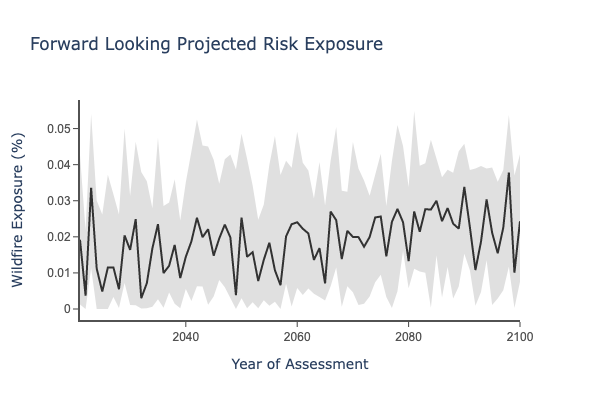

Climate Explorer Dashboard User Guide
Introduction
This document goes through each graphic on the dashboard and explain the methodology behind it. This includes how to use and interpret the numbers, plus a written interpretation of the datasets.
Scenario-based physical climate risk analysis
Map your portfolio asset locations
The first view on the dashboard is the Asset Type map that maps your portfolio asset locations.

Fig 1: Asset Type map
This is an interactive graphic which shows all the assets for the selected portfolio on a map. This view remains consistent across all the different scenarios and hazards, as it only shows asset locations and not risk.
It also acts as a ‘controller’ for the other views on the dashboard - if you click on a specific asset on the map, the time series graphs for this section on the dashboard will change to show the data for that specific asset location. You can check which asset is selected by looking below the map at the address written. In this case, the selected asset is Wadsen Rd, Montgomery, AL, 36105, and it is the 0th asset in the input portfolio CSV.
When hovering over a specific asset, you can see the data attributes for the specific asset, including the address, type, coordinates and index value. The top bar displays the legend, where each color indicates a specific asset type. Asset types can be manually changed to suit your needs. In this example, they show the different types of real estate, such as industrial, office or multifamily buildings. However, you could change this to be countries or cities, and this is done by creating a column called label:type in the input portfolio CSV and inputting values for each asset. Refer to the User Guide section Uploading a portfolio for more information on this.
View your risk heatmap
By selecting Risk Heatmap on the dropdown labeled Mapping, you can change the view to show a Risk Heatmap.
Fig 2: Risk heatmap
This view shows the heatmap of forward-looking risk for a selected physical hazard type. We project physical risk over the 30 year window between 2022 and 2051 and look at the maximum risk exposure to a specific hazard for an asset. We use the maximum risk exposure value to color code the asset to LOW (Green), MEDIUM (Yellow), or HIGH (Red) risk categories. The top bar displays the legend, where each color indicates a specific risk class.
The risk heatmap values change if you toggle between the different scenarios by using the Climate Scenario dropdown, and they vary by hazard, which you can change by using the Projected Hazard dropdown.
This view also acts as a ‘controller’ for the other views in this section on the dashboard - if you click on a specific asset on the map, the time series graphs in this section on the dashboard will change to show the data for that specific asset location. You can check which asset is selected by looking below the map at the address written. In this case, the selected asset is Wadsen Rd, Montgomery, AL, 36105, and it is the 0th asset in the input portfolio CSV.
When hovering over a specific asset, you can see the data attributes for the specific asset, including the risk class, coordinates and index value.
Methodology
For a selected scenario (SSP), we identify the maximum value of risk exposure over the 30 year analysis time window for each asset, across each hazard.
- We look at the 30 year window (2022-2051) for each hazard. This is with the exception of sea level rise (SLR), with 2022-2100 being the SLR input to the risk summary view. This is to account for sea level rise being a longer term hazard, having more profound exposure over the second half of the century.
- For each hazard, we then identify the maximum risk exposure value of each asset over all the years in the analysis time window. Once we find the maximum risk exposure value for a single asset over the entire time window, we use that value as input to a classification of LOW, MEDIUM or HIGH. Maximum exposure values per hazard, as well as the heatmap coding ranges, are listed in the Data Guide.
- For flooding, we use the number of years within the 30 year window where the risk exceeds a preset threshold (5%). This reflects a count of high flood risk years, which we recommend to better distinguish between LOW, MEDIUM or HIGH exposure.
Find your assets with greatest risk exposure
This bar chart shows the top 20 assets in a portfolio with the greatest risk exposure to a particular hazard during the 30 year time horizon (2022-2051).
Fig 3: Bar chart showing the top 20 assets with the greatest risk exposure within a portfolio
This allows you to quickly view all the addresses of assets that are most at risk. Toggle the ‘Projected Hazard’ dropdown to change the hazard, and this will change the bar chart accordingly.
Check the units for the x-axis by looking at the table in the Data Guide. You can hover over the bar chart to see the specific numeric projected risk value as well as the time horizon of assessment. The values in parentheses indicate the row index of the asset in the uploaded CSV file.
Methodology
This is identical to the methodology in the Risk Heatmap section above.
For a selected scenario (SSP), we identify the maximum value of risk exposure over the 30 year analysis time window for each asset, across each hazard.
- We look at the 30 year window (2022-2051) for each hazard. This is with the exception of sea level rise (SLR), with 2021-2100 being the SLR input. This is to account for sea level rise being a longer term hazard, having more profound exposure over the second half of the century.
- For each hazard, we then identify the maximum risk exposure value of each asset over all the years in the analysis time window and use that value as input to this bar chart. Therefore, this bar chart shows the assets which have had the highest risk exposure to a specified hazard in any given year during the 30 year time window.
Interpretation
The interpretations vary depending on the hazard and the scenario, as follows.
Projected Hazard: Wildfire: Asset X has a Wildfire risk projection value of [0.1]. This means that over the next 30 years, there is at least one year where there is a [10]% probability of a wildfire occurring within 1km of the asset under the [High Emissions] scenario.
Projected Hazard: Inland Flooding: Asset X has an Inland Flooding risk projection value of [0.1]. This means that over the next 30 years, there is at least one year where there is a [10]% probability of exposure to a flood under the [High Emissions] scenario.
Projected Hazard: Heatwaves: Asset X has a Heatwave risk projection value of [108]. This means that over the next 30 years, there is at least one year where there are [108] annual heatwave days projected under the [High Emissions] scenario.
Projected Hazard: Water Stress: Asset X has a Water Stress risk projection value of [0.4]. This means that over the next 30 years, there is at least one year where the annual ratio of water demand to renewable water availability is [0.4] under the [High Emissions] scenario. A score of 0.0 indicates that there is no water stress, and a score of 1.0 indicates extreme water stress. The World Resources Institute set the threshold of 0.4 as ‘High’ based on existing scientific literature and expert judgments. If you are interested in reading more, see section 5.1 of the WRI Aqueduct documentation.
Projected Hazard: Sea Level Rise: Asset X has a Sea Level Rise risk projection value of [0.3]. This means that over the next 30 years, there is at least one year where the annual projected sea level rise is [0.3] meters above the average historic sea level from 1980-2010 under the [High Emissions] scenario.
Projected Hazard: Tropical Cyclones: Asset X has a Tropical Cyclone risk projection value of [0.5]. This means that over the next 30 years, there is at least one year where there is [50]% probability of at least one hit by a category 3/4/5 cyclone within a 241km radius of the asset under the [High Emissions] scenario.
View historic risk exposure to your assets
This view shows the observed historic monthly risk event occurrence for a particular asset to a particular hazard from 2010 onwards.

Fig 4: Historic time series
Use the ‘Historic Hazard’ dropdown to toggle between the different hazards. Please note that we currently offer observed historical data on wildfire, flooding, cyclones and water stress.
Check the units for the y-axis by looking at the table in the Data Guide. You can check which asset is selected by looking below the first map on the dashboard, the Asset Type/Risk Heatmap, and see which address is written. You can select a different asset by clicking on that map, and this will change the historic time series.
By hovering over the time series line, you can see the specific numeric value on hazard severity for that particular asset, as well as the month and year of the observed event.
Interpretation
The graphs vary depending on the hazard, as follows.
Historic Hazard: Wildfire Asset X has a Wildfire historic risk event severity value of either 1 or 0 in [2018]. This means that in [2018], there was or wasn’t a satellite-observed wildfire within a 1km radius of asset X.
Historic Hazard: Inland Flooding Asset X has a flood historic risk event severity value of either 1 or 0 in [2018]. This means that in [2018], there was or wasn’t a satellite-observed flood within a 1km radius of asset X.
Historic Hazard: Cyclone Asset X has a Cyclone historic risk event severity value of [1] in [Sep 2017]. This means that there was [one] Category 3, 4 or 5 cyclone observed in [September 2017] within a 241km radius of Asset X. The upper limit on historic cyclone values is set to 7. This is because research has shown that there are very few locations exceeding 6 cyclones per month.
View projected risk exposure to your assets
This view shows the projected annual risk exposure for a particular asset up until the year 2100.

Fig 5: Forward looking time series
Use the Projected Hazard dropdown to toggle between the different hazards and this will change the graph. You can learn more about the units for the y-axis by looking at the table in the Quickstart Data Guide. You can check which asset is selected by looking below the first map on the dashboard, the Asset Type/Risk Heatmap, and see which address is written. You can select a different asset by clicking on that map, and that will change the forward looking time series graph.
The data presented is the median of outputs from the climate models. The gray bounds represent the uncertainty of the climate model outputs, which show the lower bound (16th percentile) and upper bound (84th percentile). The exception is cyclones, where we use the mean, rather than the median, and we use a different lower and upper bound (± 1 standard deviation). By hovering over the time series line, you can see the specific value for risk exposure for that particular asset and the specific date (year).
Interpretation
The graph varies depending on the hazard and the scenario, as follows.
Projected Hazard: Wildfire: Asset X has a Wildfire risk projection value of [0.05] in [Jan, 2023]. This means that in the year [2023], we project a [5]% probability of a wildfire occurring within 1km of the asset under the [High Emissions] scenario.
Projected Hazard: Inland Flooding: Asset X has an Inland Flooding risk projection value of [0.1] in [Jan, 2023]. This means that in the year [2023], we project a [10]% probability of exposure to a flood under the [High Emissions] scenario.
Projected Hazard: Heatwaves: Asset X has a Heatwave risk projection value of [108] in [Jan, 2023]. This means that in the year [2023], we project [108] heatwave days under the [High Emissions] scenario.
Projected Hazard: Water Stress Score: Asset X has a Water Stress Score risk projection value of [0.4] in [Jan, 2023]. This means that in the year [2023], we project that the annual ratio of water demand to renewable water availability will be [0.4] under the [High Emissions] scenario. A score of 0.0 indicates that there is no water stress, and a score of 1.0 indicates extreme water stress. The World Resources Institute set the threshold of 0.4 as ‘High’ based on existing scientific literature and expert judgment, but there is inherently a degree of subjectivity in defining thresholds. If you are interested in reading more, see section 5.1 of the WRI Aqueduct documentation.
Projected Hazard: Sea Level Rise: Asset X has a Sea Level Rise risk projection value of [0.3] in [Jan, 2023]. This means that in the year [2023], we project that the sea level rise will be [0.3] meters above the average historic sea level from 1980-2010 under the [High Emissions] scenario.
Projected Hazard: Tropical Cyclone: Asset X has a Tropical Cyclone risk projection value of [0.5] in [Jan, 2023]. This means that in the year [2023], we project a [50]% probability of at least one hit by a category 3/4/5 cyclone within a 241km radius of the asset under the [High Emissions] scenario.
Viewing risk exposure across hazards
View projected risk across all hazards
This view allows you to see a consolidated view of risk exposure across all assets, across multiple hazards.
Fig 6: Multi-hazard Heatmap
Each asset is color coded as LOW (Green), MEDIUM (Yellow), or HIGH (Red) risk according to its normalized risk exposure across all the hazards.
This view also acts as a ‘controller’ for the normalized multi-hazard time series view (to the right) on the dashboard - if you click on a specific asset on the map, the time series view to the right will change to show the data for that specific asset location. You can check which asset is selected by looking below the multi-hazard heatmap at the address written: in this case, the selected asset is Wadsen Rd, Montgomery, AL, 36105, and it is the 0th asset in the input portfolio CSV. The top bar displays the legend, where each color indicates a specific risk class.
When hovering over a specific asset, you can see the data attributes for the specific asset, including the risk class, coordinates and index value.
Methodology
For wildfire, flood, sea level rise and drought, we project physical risk over the 30 year window between 2022 and 2051 and look at the maximum risk exposure to a specific hazard for an asset. The risks are normalized based on peak risk values of the risk exposure distribution. We use the maximum risk exposure value to color code the asset to LOW (Green), MEDIUM (Yellow), or HIGH (Red) risk categories.
View projected risk exposure to your assets across all hazards
This view provides a normalized view of forward looking risk exposure for a specific asset across all hazard types.
Fig 7: Normalized multi-hazard time series view
By selecting a specific asset, you can explore the risk over the 2021-2100 time horizon. The idea behind this plot is to show all the hazard time series on one graph. Since all the hazards are at different ranges and scales, we normalize them between 0 and 1 to allow inter-hazard comparison and to present all time series together, with different colors representing different hazards.
By hovering over each of the lines, you can see the specific value of risk exposure for a specific hazard at a certain point in time. You can check which asset is selected by looking at the multi-hazard heatmap (to the left on the dashboard), and see which address is written. You can select a different asset by clicking on the Multi-hazard Heatmap, and this changes the normalized multi-hazard time series.
Methodology For each hazard, we divide the time series values by the normalization value to get the normalized time series. All values for that specific hazard are normalized to the 0.0 to 1.0 range. In select years and locations where the values exceed the normalization value, those extreme values are set to 1.0 for the time series.
See the Data Guide for the normalization values (the column val_norm).
Interpretation
The graph will vary depending on the scenario, as follows.
Projected Hazard: Wildfire: Asset X has a wildfire risk probability projection value of [0.1] in [Jan, 2045] under the [High Emissions] scenario.
Projected Hazard: Flood: Asset X has a normalized Inland Flooding risk projection value of [0.8] in [Jan, 2045] under the [High Emissions] scenario.
Projected Hazard: Heatwave: Asset X has a normalized Heatwave risk projection value of [0.3] in [Jan, 2045] under the [High Emissions] scenario.
Projected Hazard: Water Stress: Asset X has a normalized water stress risk projection value of [0.5] in [Jan, 2045] under the [High Emissions] scenario.
Projected Hazard: SLR: Asset X has a normalized Sea Level Rise risk projection value of [0.4] in [Jan, 2045] under the [High Emissions] scenario.
Projected Hazard: Tropical Cyclone: Asset X has a normalized Cyclone risk projection value of [0.8] in [Jan, 2045] under the [High Emissions] scenario.
Exploring portfolio level risk exposure
View Tabular risk summaries across asset groups
This view provides a summary of the forward looking risk exposure across different hazards for each of the asset types. It is essentially a tabular view of the Risk Heatmap, aggregated by asset type.

Fig 8: Portfolio Summary Risk Table
The summary risk values change if you toggle between the different scenarios by using the Climate Scenario dropdown.
The risk summaries are based on the average values of exposure across all assets of a specific type. Asset types can be manually changed to suit your needs. In this example, they show the different types of real estate, such as industrial, office or multifamily buildings. However, you could change this to be countries or cities, and this is done by creating a column called label:type in the input portfolio CSV, and inputting values for each asset. As a result, the summary risk table shows the summary risk aggregated by your chosen types, such as country or city. Refer to the User Guide section Uploading a portfolio for more information on this.
Methodology
For a selected scenario (SSP), we look at the maximum value of risk exposure over the 30 year time window for all hazards, aggregated by asset type. We look at the maximum risk exposure value across the 30 year time horizon for all hazards, with the exception of sea level rise (SLR) and 2021-2100 for SLR as the input to the risk summary view. For a specific asset type, we look at the mean risk value per year for each hazard for all assets within that type. We repeat this across all the different asset types. This gives an average value of risk exposure across all types of assets for each year in the time window. For each hazard, we then pick the year with the maximum mean risk exposure value for each asset type. The mean risk value for that year is then used to determine the classification for that asset type as LOW, MEDIUM or HIGH risk based on the intervals listed in the Quickstart Data Guide.
Interpretation
Note that the HIGH/MEDIUM/LOW classification is based on the intervals in the Quickstart Data Guide. Interpretation of the summary risk table varies with asset type (row), hazard and climate scenario as follows:
Projected Hazard: Wildfire: This means that over the next 30 years, there is at least one year where the maximum mean exposure of all the type X assets to Wildfire risk is [Medium] risk under the [High Emissions] scenario.
Projected Hazard: Flood: This means that over the next 30 years, there is at least one year where the maximum mean exposure of all the type X assets to Inland Flooding risk is [Medium] risk under the [High Emissions] scenario.
Projected Hazard: Heatwave: All assets of type X in this portfolio are projected to have [Medium] Heatwave risk across the next 30 years. This means that over the next 30 years, there is at least one year where the maximum mean exposure of all the type X assets to Heatwave risk is [Medium] risk under the [High Emissions] scenario.
Projected Hazard: Water Stress: All assets of type X in this portfolio are projected to have [Medium] Drought risk across the next 30 years. This means that over the next 30 years, there is at least one year where the maximum mean exposure of all the type X assets to Drought risk is [Medium] risk under the [High Emissions] scenario.
Projected Hazard: SLR: All assets of type X in this portfolio are projected to have [Medium] Sea Level Rise (SLR) risk across the next 30 years. This means that over the next 30 years, there is at least one year where the maximum mean exposure of all the type X assets to Sea Level Rise risk is [Medium] risk under the [High Emissions] scenario.
Projected Hazard: Tropical Cyclone: All assets of type X in this portfolio are projected to have [Medium] Cyclone risk across the next 30 years. This means that over the next 30 years, there is at least one year where the maximum mean exposure of all the type X assets to Cyclone risk is [Medium] risk under the [High Emissions] scenario.
Track estimated loss to your portfolio
This view shows the estimated Value-at-Risk (VaR) analysis based on the climate risk of your portfolio, across a 30 year time horizon (2022-2051).
Fig 9: Value-at-Risk (VaR) estimates
This view depends on ‘Distribution by Type’ being selected under the ‘Summary Graph View’ dropdown.
The left donut chart shows the distribution of value across different asset types in the portfolio, while the right donut chart shows the associated loss distribution across all asset types, as a percentage of the total Value-at-Risk of the portfolio. Here, both value and VaR are expressed in terms of a percentage of the total portfolio, but you can toggle between this and millions of US dollars by clicking on the ‘Donut Graph View’ dropdown. By default, these distributions are based on forward looking scenarios, which can be changed by using the ‘Climate Scenario’ dropdown.
The values below the donut charts tell you the total portfolio value and the estimated total VaR, both in USD (millions).
In cases where the dataset does not have an asset value associated with individual assets, all assets are by default assumed to have the same value of $1m. You can add asset value in the intake portfolio CSV. Refer to the User Guide section ‘Uploading a portfolio’ for more information. Asset types can also be manually changed to suit your needs.
Methodology
For each asset, we assume that 40% of the value (price) of the asset is the maximum value that can be at risk of a specific hazard. We then multiply 40% by the maximum probability of risk exposure to that hazard over the 30 year time horizon. The result gives us the percentage of the asset value that is at risk. For example, if an asset has a projected 50% maximum probability of exposure to a certain hazard over the 30 year window, we calculate that 40% of 50% is 20%, so therefore 20% of the asset’s value is at risk.
To compute each slice of the donut chart, we add up the Value at Risk for each asset of the same type. Therefore, each slice of the donut indicates the aggregate Value at Risk from a specific hazard for a specific asset type.
Estimated Loss Across Scenarios Summary
This bar chart allows you to see the estimated loss across different asset types simultaneously across the different climate scenarios.
Fig 11: Loss across scenarios graph
This view can be accessed by selecting ‘Loss Across Scenarios’ under the ‘Summary Graph View’ dropdown.
We expect correlation between the scenarios (SSPs) and the estimated loss to be dependent on the geospatial distribution of the assets in the portfolio for each asset type. In this view, estimated loss is expressed in terms of a percentage of the total portfolio, but you can click on the ‘Donut Graph View’ dropdown to change the units to millions of dollars.
Interpretation
This view varies depending on the scenario and projected hazard as follows.
Projected Hazard: Wildfire: All assets of type X in this portfolio are projected to have an aggregated Value at Risk of [Wildfire] that is $[8m] across the next 30 years under the [High Emissions] scenario, $[6m] under the [Middle of the Road] scenario and $[4m] under the [Strong Mitigation] scenario.
Projected Hazard: Flood: All assets of type X in this portfolio are projected to have an aggregated Value at Risk of [Inland Flooding] that is $[8m] across the next 30 years under the [High Emissions] scenario, $[6m] under the [Middle of the Road] scenario and $[4m] under the [Strong Mitigation] scenario.
Projected Hazard: Heatwave: All assets of type X in this portfolio are projected to have an aggregated Value at Risk of [Heatwaves] that is $[8m] across the next 30 years under the [High Emissions] scenario, $[6m] under the [Middle of the Road] scenario and $[4m] under the [Strong Mitigation] scenario.
Projected Hazard: Water Stress: All assets of type X in this portfolio are projected to have an aggregated Value at Risk of [Water Stress] that is $[8m] across the next 30 years under the [High Emissions] scenario, $[6m] under the [Middle of the Road] scenario and $[4m] under the [Strong Mitigation] scenario.
Projected Hazard: SLR: All assets of type X in this portfolio are projected to have an aggregated Value at Risk of [Sea Level Rise] that is $[8m] across the next 30 years under the [High Emissions] scenario, $[6m] under the [Middle of the Road] scenario and $[4m] under the [Strong Mitigation] scenario.
Projected Hazard: Cyclone: All assets of type X in this portfolio are projected to have an aggregated Value at Risk of [Cyclones] that is $[8m] across the next 30 years under the [High Emissions] scenario, $[6m] under the [Middle of the Road] scenario and $[4m] under the [Strong Mitigation] scenario.
Exploring climate variables
Map your portfolio asset locations
This view is another Asset Type map which can be used as a controller for the temperature and precipitation time series to the right.

Figure 12: Temp/Precip Asset Type map controller
This is an interactive graphic which shows all the assets for the selected portfolio on a map. This view remains consistent across all the different scenarios and hazards, as it only shows asset locations and not risk.
It also acts as a ‘controller’ for the temperature and precipitation time series to the right on the dashboard - if you click on a specific asset on the map, the time series graphs on the dashboard will change to show the data for that specific asset location. You can check which asset is selected by looking below the map at the address written: in this case, the selected asset is Wadsen Rd, Montgomery, AL, 36105, and it is the 0th asset in the input portfolio CSV.
When hovering over a specific asset, you can see the data attributes for the specific asset, including the address, type, coordinates and index value.
Temperature and Precipitation time series
This time series view shows the projected fundamental climate variables over different selected scenarios.
Fig 13: Temperature time series
We offer projections of annual temperature, annual precipitation, and extreme precipitation, each of which can be selected by using the ‘Risk Variable’ dropdown. When hovering over the graph, you can see the value of the fundamental variable at a specific year for the selected scenario. You can also switch between the scenarios by using the Climate Scenario dropdown.
You can check which asset is selected by looking below the map to the left on the dashboard, the asset type map, and see which address is written. You can select a different asset by clicking on that map, and this will change the historic time series graph.
The black time series line indicates the mean value of that variable for the specified asset at that point in time, and the gray band around indicates the uncertainty of the forward looking projections. This is typically ±1 standard deviation in the outputs of the collection of climate models used. Increased uncertainty from the climate models will result in wider tolerance bands for specific variables, and uncertainty typically increases over time.